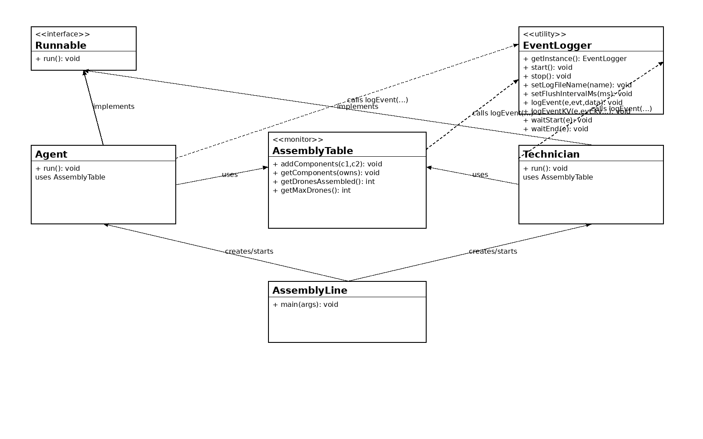
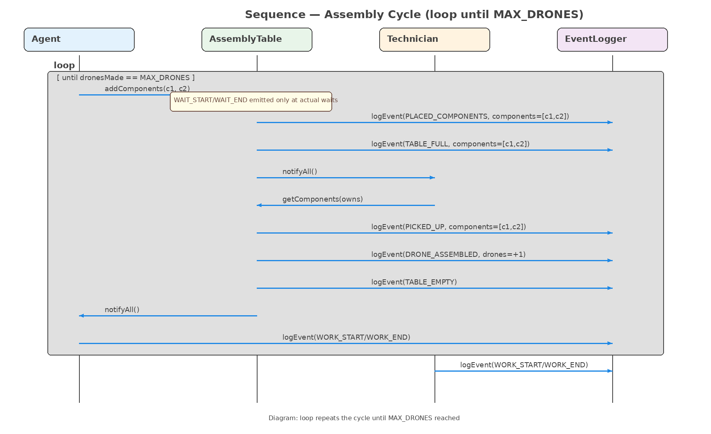
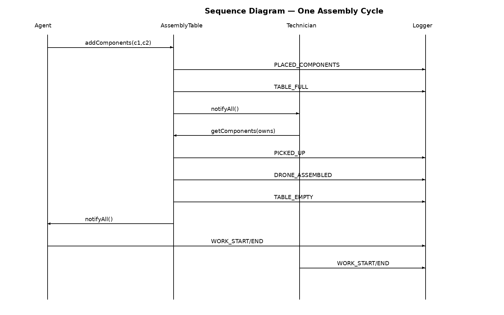

DRONE ASSEMBLY LINE — LOGGING & METRICS SYSTEM
SYSC 3303A W2026 • Dr. Rami Sabouni • Assignment 4
Overview
- Agent places two components; three Technicians assemble drones from the other two.
- AssemblyTable is the monitor coordinating
wait()/notifyAll().
- EventLogger is a daemonized, buffered singleton; run‑ID log file per run.
- LogAnalyzer post‑processes the log → throughput, utilization, response times.
How to Run (IntelliJ)
- Run
AssemblyTable.main().
- System stops, logger flushes; then
LogAnalyzer.main() runs automatically.
- Open
assembly_log_YYYYMMDD_HHMMSS.txt and metrics.txt.
Key Log Format
Event log: [yyyy-MM-dd HH:mm:ss.SSS , ENTITY , EVENT_CODE , key=value; key=value]
Core events: WAIT_START/WAIT_END (monitor waits), PLACED_COMPONENTS, PICKED_UP, DRONE_ASSEMBLED, TABLE_FULL, TABLE_EMPTY, WORK_START/WORK_END, RESPONSE_TIME, SYSTEM_*.

Figure 1 — UML Class Diagram (Agent, Technician, AssemblyTable monitor, EventLogger, AssemblyLine driver)

Figure 2 — Sequence Diagram (loop until MAX_DRONES, coloured)

Appendix — Sequence Diagram (single cycle, simple)